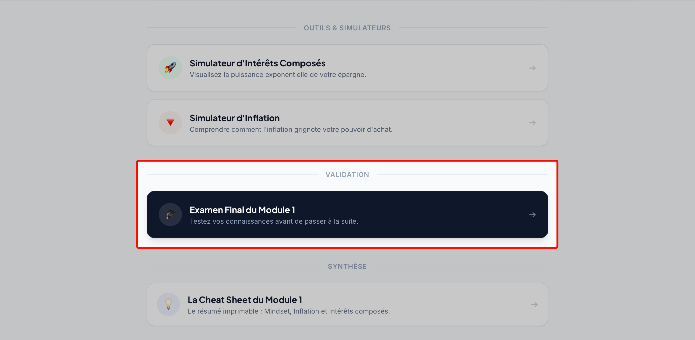
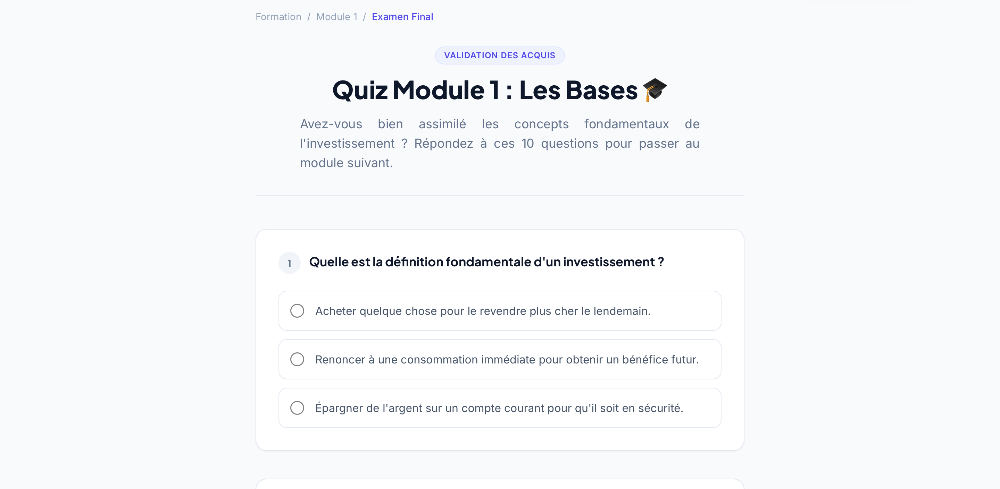
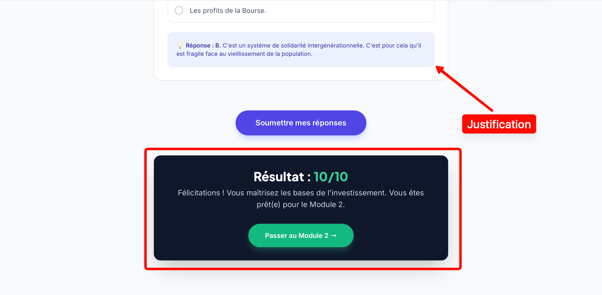

Il existe un biais psychologique très connu dans l'apprentissage que l'on appelle "l'illusion de compétence". Lorsque vous lisez un texte clair ou que vous regardez une vidéo bien expliquée, votre cerveau vous fait croire que vous maîtrisez parfaitement le sujet. Vous hochez la tête en vous disant : "C'est logique, j'ai tout compris". Mais que se passe-t-il si, le lendemain, on vous demande d'expliquer ce même concept à voix haute devant une page blanche ? Bien souvent, c'est le trou noir.
En Bourse, l'illusion de compétence coûte extrêmement cher. Si vous pensez avoir compris comment calculer une marge de sécurité mais que vous vous trompez dans les faits au moment d'acheter une action, c'est votre propre capital durement gagné qui s'évapore. C'est précisément pour éviter cela que la plateforme StocksPickeur intègre un système d'évaluation rigoureux.
1. L'Examen Final du Module : Votre Checkpoint Obligatoire
À la fin de chaque module d'apprentissage, vous constaterez qu'il y a une section intitulée "Validation" située juste en dessous de la liste des chapitres et des outils. C'est ici que se trouve l'Examen Final du module en cours.

Cet examen n'est pas là pour vous piéger, mais pour agir comme un véritable filet de sécurité. Avant de vous lancer dans le module suivant (qui s'appuiera inévitablement sur les concepts du module précédent), vous devez vous prouver à vous-même que les fondations sont solides. Considérez cet examen comme un droit de passage que vous vous accordez.
2. Le format : 10 questions pour tout consolider
Lorsque vous lancerez l'examen final, vous serez confronté à un Quiz interactif. La structure de cette évaluation a été pensée pour tester votre compréhension globale et non juste votre mémoire à court terme.

Voici les règles précises de nos examens finaux :
- 10 questions par module : Chaque examen est composé d'exactement dix questions. C'est le nombre parfait pour ne pas être trop chronophage tout en assurant une couverture complète du sujet.
- Un balayage complet : Ces questions portent sur l'ensemble des chapitres du module. Vous aurez donc des questions liées au premier chapitre comme au tout dernier. Rien n'est laissé au hasard.
- Attention aux réponses multiples : Ne vous précipitez pas ! Lisez chaque question avec une extrême attention. La finance exige de la nuance. Par conséquent, il est tout à fait possible que certaines questions n'appellent qu'une seule et unique bonne réponse, tandis que d'autres nécessiteront de cocher plusieurs réponses valides simultanément pour obtenir le point.
3. Le "Bac à sable" : Votre droit absolu à l'erreur
Dédramatisons la situation immédiatement : il n'y a aucune pression. Considérez ces quiz d'évaluation comme votre bac à sable personnel. C'est l'unique endroit de cette formation (et de votre vie d'investisseur) où faire une erreur monumentale ne vous coûtera pas un seul centime.
Il vaut infiniment mieux se tromper de formule de valorisation ici, obtenir un douloureux 3/10 au quiz, et comprendre pourquoi on a fauté, plutôt que de faire cette même erreur d'appréciation demain matin sur votre véritable compte courtier avec 5 000€ de vos propres économies en jeu. Acceptez l'échec lors de ces tests, il est formateur.
4. Le concept du "Quiz à livre ouvert" (Ce n'est pas l'école)
Oubliez vos années lycée ou vos examens universitaires : chez StocksPickeur, tous les tests sont à "livre ouvert". Si vous avez un doute sur une question, que vous ne vous souvenez plus d'une définition exacte ou d'un calcul, ouvrez un nouvel onglet ! Retournez lire le chapitre concerné, relisez vos notes de cours, utilisez la fonction recherche de votre navigateur.
Le but de cet examen n'est pas de tester votre capacité à apprendre par cœur de manière scolaire. Le but est de vérifier que vous savez où chercher l'information et comment l'appliquer dans un contexte précis. Dans la vraie vie, lorsque les marchés sont ouverts, un bon investisseur vérifie toujours ses données et ses calculs avant d'appuyer sur le bouton d'achat. Prenez cette habitude dès maintenant.
5. La Correction Détaillée : Le vrai moment d'apprentissage
Le but du Quiz n'est pas d'avoir une belle note pour flatter votre ego. C'est pour cette raison que l'étape de la correction est probablement la plus importante du processus.

Une fois que vous avez répondu aux 10 questions et cliqué sur le bouton de soumission, votre score final s'affichera. Mais surtout, sous chaque question, un petit encart grisé apparaîtra contenant la justification détaillée de la réponse attendue.
Prenez impérativement le temps de lire ces justifications, en particulier pour les questions où vous avez commis une erreur. Vous pouvez refaire chaque examen autant de fois que vous le souhaitez. Notre recommandation ? Fixez-vous la règle d'or du 8/10 minimum. Si vous obtenez un score inférieur, retournez lire les chapitres où vous avez péché, laissez reposer une nuit, et retentez votre chance le lendemain pour vous assurer que c'est définitivement acquis.
🔑 Ce qu'il faut retenir
Considérez l'examen de fin de module comme un bac à sable gratuit où l'erreur est permise et formatrice. Ces quiz de 10 questions sont à "livre ouvert" : vous avez le droit absolu de consulter vos notes car un bon investisseur vérifie toujours ses données. Lisez attentivement chaque question (des réponses multiples sont parfois possibles) et étudiez les justifications détaillées pour viser un score minimum de 8/10 avant de passer officiellement à la suite.